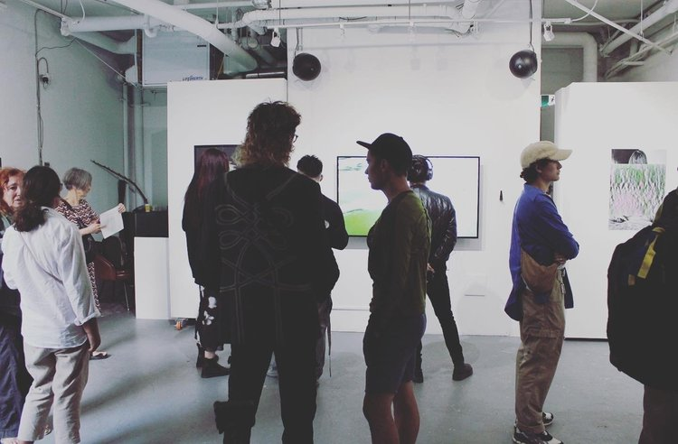
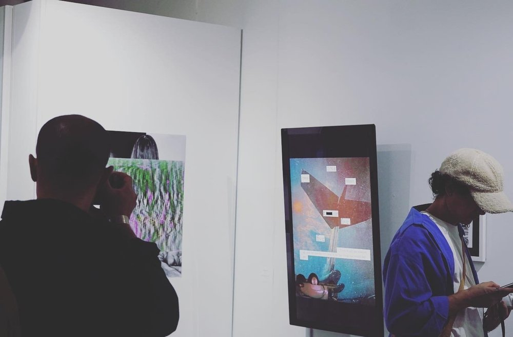
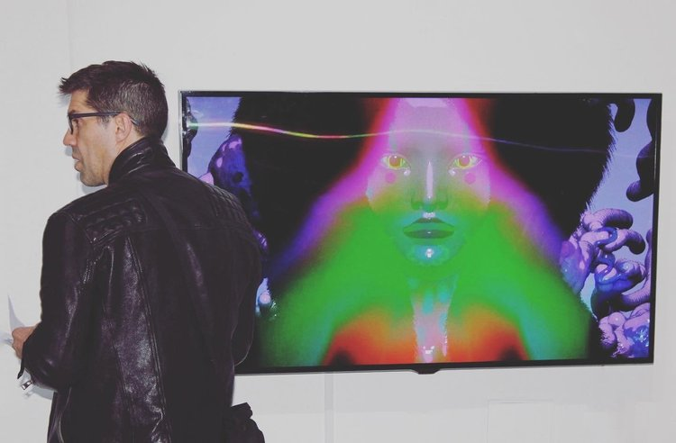
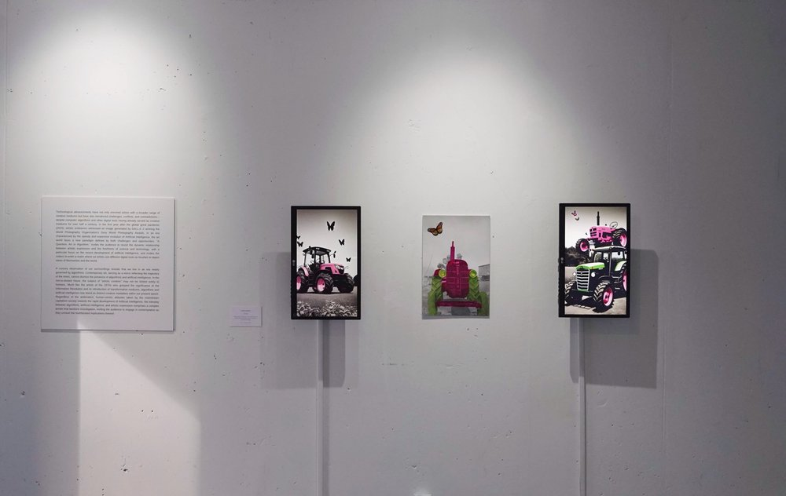

A Question: Art or Algorithm?
In 2023, in the aftermath of the global pandemic, an AI-generated image created using DALL·E 2 received recognition at the Sony World Photography Awards, provoking widespread debate regarding authorship, creativity, and the increasingly unstable boundaries between human artistic labor and machine-generated production. As artificial intelligence technologies continue to expand rapidly across cultural and economic spheres, the contemporary art world faces a new paradigm shaped not only by technological possibility, but also by concerns surrounding automation, authorship, labor, and the commodification of creativity. A Question, Art or Algorithm critically revisits the relationship between artistic expression and developments in science and technology, with particular attention to the recent rise of artificial intelligence. Bringing together seven artists, the exhibition invites viewers into a space where digital tools function simultaneously as creative instruments and as sites of tension, through which artists negotiate questions of identity, agency, and the changing conditions of image-making in contemporary society.
Much like the artists of the 1970s who recognized the transformative implications of the Information Revolution and its introduction of new artistic media, algorithms and artificial intelligence have emerged as significant creative modalities within the present cultural moment ¹. Despite the ambivalent and often human-centered attitudes adopted by mainstream capitalist society toward the rapid development of artificial intelligence, the relationship between algorithms, AI technologies, and artistic practice constitutes a complex field that demands critical examination. The exhibition therefore encourages audiences to reflect upon the multifaceted implications of technologically mediated creativity and the shifting boundaries between human and machine-generated forms of expression.
This curatorial project aims to foster critical dialogue surrounding the contradictory yet interdependent relationship between technology and art in the contemporary era. At the same time, it seeks to provide a platform for emerging artists whose digitally based and computer-assisted practices often face challenges in achieving institutional recognition or visibility within local art markets and critical discourse.
1. Sonia Landy Sheridan, "Generative Systems versus Copy Art: A Clarification of Terms and Ideas", in Leonardo, Vol. 16, No. 2 (Spring, 1983), pp. 103-108.




